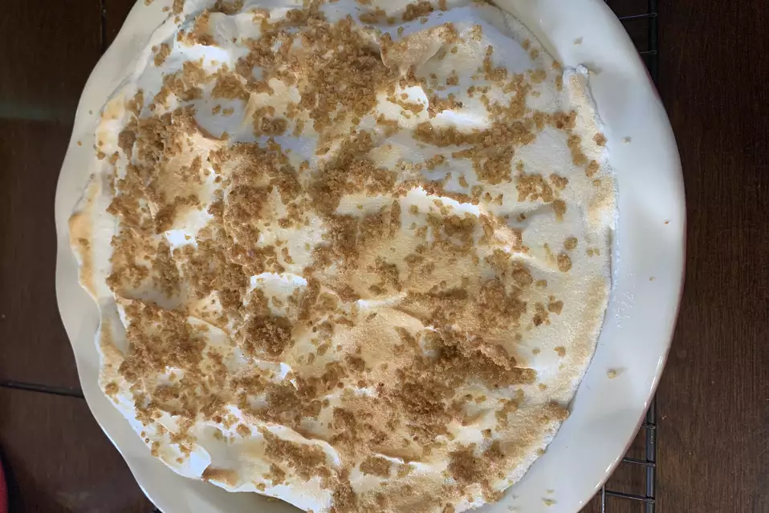

Flapper Pie

Vanilla custard pie with meringue in a cinnamon-graham cracker crust.
Ingredients
Crust:
- 1 ½ cups graham cracker crumbs
- ½ cup white sugar
- ½ cup butter, melted
- 1 tablespoon ground cinnamon
Filling:
- 3 cups milk
- ½ cup white sugar
- ¼ cup cornstarch
- 3 egg yolks
- 1 teaspoon vanilla extract
Meringue:
- 3 egg whites
- 2 tablespoons white sugar
Steps
- Preheat an oven to 350 degrees F (175 degrees C).
- Mix the graham cracker crumbs, 1/2 cup sugar, melted butter, and cinnamon in a bowl. Reserve 1/4 cup for topping the pie. Press the remaining crumb mixture in the bottom and up the sides of a 9-inch deep-dish pie plate. Bake the crust in the preheated oven for 8 minutes.
- Heat the milk in a saucepan over medium-high heat. In a non-plastic bowl, whisk together the 1/2 cup sugar, cornstarch, egg yolks, and vanilla. When the milk is hot but not boiling, slowly pour the milk in a steady stream into the yolk mixture, whisking constantly. Return the custard to the saucepan and bring to a boil over medium heat, stirring constantly with a wooden spoon or a heat-proof spatula. Cook and stir for 2 to 3 minutes over low heat until the custard has thickened. Pour the custard into the graham cracker crust.
- Preheat the oven's broiler and set the oven rack about 6 inches from the heat source.
- Beat the egg whites until medium peaks form; add 2 tablespoons of sugar and beat until the meringue is stiff. Scoop out the meringue on top of the custard filling. Sprinkle the meringue with the reserved graham cracker crumbs.
- Place the pie under the broiler and bake until the meringue starts to brown, 3 to 5 minutes.
Return